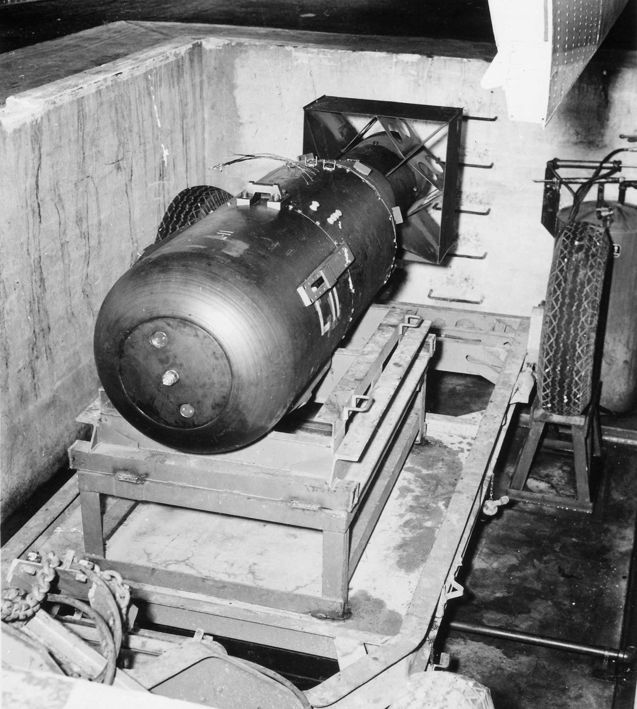
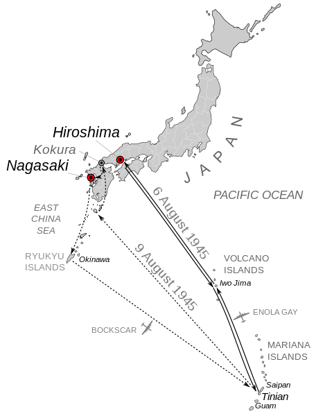
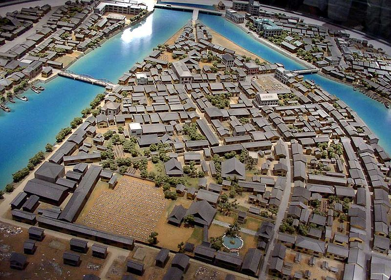
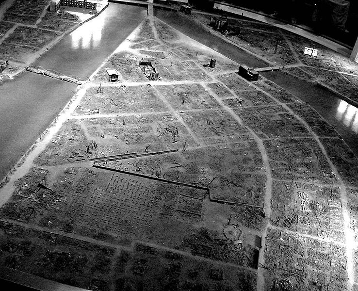

Startseite
Unterschied Atom- und Wasserstoffbombe
Hiroshima
Nagasaki
Kontakt
Hiroshima
"[...] Ota was looking at me with his left eye.
His right eyeball was hanging from his face.
I think he said something, but I could not make it out.
Pieces of nails were stuck on his lips.
[...] A moment later he died.
By now the school was engulfed in flames.
I started to walk away, and then looked back.
Ota was staring at me with his one good eye.
I can still see that eye in the dark."
-Yoshitaka Kawamoto, TIME-Magazine, August 6, 2015

Am 6. August 1945 warfen die Vereinigten Staaten die Uranbombe "Little Boy" auf Hiroshima.
70.000 bis 80.000 Menschen waren sofort tot. Bei Menschen, die sich im innersten
Stadtkern aufhielten, verdampften buchstäblich die obersten Hautschichten.
Der gleißende Blitz der Explosion brannte Schattenrisse von Personen in stehengebliebene
Hauswände ein, ehe die Menschen von der Druckwelle fortgerissen wurden.
Die überwiegend unmittelbar bei der Explosion freigesetzte nukleare Strahlung
tötete in den Wochen darauf zahlreiche weitere Einwohner, die zwar nicht der unmittelbaren
Druck- und Hitzewelle zum Opfer gefallen waren, jedoch tödliche Strahlendosen erhalten hatten.
Viele, die vor der unerträglichen Hitze an den Fluss geflohen waren und von kontaminiertem Wasser tranken,
hatten daraufhin Haarausfall, bekamen purpurrote Flecken am ganzen Körper und verbluteten dann qualvoll an inneren Verletzungen.
Insgesamt starben bei dem Abwurf samt den Spätfolgen bis 1946 unterschiedlichen Schätzungen zufolge 90.000 bis 166.000 Menschen.
Die Bombe tötete 90 Prozent der Menschen in einem Radius von 500 Metern um
Ground Zero und immer noch 59 Prozent im weiteren Umkreis von 0,5 bis einem Kilometer.
Bis heute sterben damalige Einwohner Hiroshimas an Krebserkrankungen als Langzeitfolge der Strahlung.
Einer Studie zufolge waren neun Prozent der Krebserkrankungen,
die von 1950 bis 1990 bei Überlebenden auftraten, eine Folge des Abwurfs.
Die Überlebenden der Atombomben werden in Japan als Hibakusha bezeichnet.
Wahl des Ziels

Hiroshima war bis dahin als eine von wenigen japanischen Großstädten von Bombardierungen
verschont geblieben. Es war Sitz des Hauptquartiers der 2. Hauptarmee unter Feldmarschall
Hata Shunroku, das für die Verteidigung Südjapans zuständig war. Die 59. Armee sowie die
5. Division hatten ihr Hauptquartier hier. Daher war es Truppensammelpunkt und diente zur
Lagerung kriegswichtiger Güter. 40.000 Militärangehörige waren in Hiroshima stationiert.
Doch die meisten der etwa 255.000 Einwohner waren Zivilisten, davon zehn Prozent koreanische
und chinesische Zwangsarbeiter.
Spaatz hielt Hiroshima für das am besten geeignete Ziel,
da es als einzige der Städte, die zur Auswahl standen, keine Kriegsgefangenenlager hatte.
Nur einige US-amerikanische Kriegsgefangene und rund ein Dutzend Deutsche befanden sich dort.
Hiroshima bestand bis auf einige Betonbauten im Zentrum aus Holzbauten.
Die US-Militärs rechneten daher mit einem Feuersturm. Industrieanlagen in den Außenbezirken der
Stadt sollten dadurch ebenfalls zerstört werden.
Startvorbereitung
Bei mehreren Dutzend B-29-Superfortress-Bombern des „Silverplate“-Programms waren unter anderem
alle Bordwaffen bis auf das Heckgeschütz entfernt und die Bombenschächte umgebaut worden, um eine
tonnenschwere Einzelbombe tragen zu können. Mit Attrappen („Kürbisbomben“) wurden Anflüge und
Abwürfe seit 1943 hundertfach durchexerziert. Im Juli 1945 wurden zudem 49 konventionelle
Einzelbomben im Format der Atombomben auf japanische Fabriken abgeworfen. Man hatte dabei auch
bereits das Wendemanöver nach der Auslösung immer wieder geübt, um dann der Druckwelle der
gezündeten Atombombe möglichst weit zu entgehen, wobei zwölf Kilometer als Mindestabstand galten.
Am 31. Juli war die drei Meter lange und vier Tonnen schwere Uranbombe „Little Boy“
(Sprengkraft 12.500 Tonnen TNT) einsatzbereit. Die Teile für die zweite Bombe „Fat Man“
trafen auf Tinian ein. Der für den 1. August geplante Start musste wegen eines Taifuns über
der Insel aufgeschoben werden. Am 4. August erfuhr Pilot Paul Tibbets unter strengsten
Geheimhaltungsauflagen, was sein Auftrag war. Er taufte sein Flugzeug, die B-29-Superfortress
Nr. 82, auf den Namen seiner Mutter „Enola Gay“.
Für den 6. August wurde klarer wolkenloser Himmel für die japanischen Inseln vorhergesagt.
Um 2:45 Uhr morgens startete das Bomberflugzeug mit zwölf Mann Besatzung an Bord. Zwei weitere
B-29-Flugzeuge, „The Great Artiste“ und ein zu diesem Zeitpunkt namenloses Flugzeug, das später
„Necessary Evil“ getauft wurde, begleiteten die „Enola Gay“. Die Befürchtungen der Militärs,
dass die Bombe vorzeitig explodieren könnte, waren groß.
Um das Risiko eines Unfalls beim Start zu senken, beschloss Captain William S. Parsons, Chef
der Ordnance Division des Manhattanprojektes, die letzten Schritte des Zusammenbaus von Little Boy
erst während des Fluges auf dem Weg nach Hiroshima auszuführen. Gegen drei Uhr morgens kroch Parsons
mit seinem Kollegen Morris Jepson in den Bombenschacht der fliegenden Enola Gay und montierte die vier
Säckchen mit dem Sprengstoff Kordit in das Kanonenrohr der Waffe und schloss die Zündkabel an. Etwa
viereinhalb Stunden später ersetzte Jepson die vier Sicherheitsstecker des Zündsystemes durch scharfe
Zündstecker. Die Bombe war nun voll einsatzbereit und bezog Energie aus den eigenen Batterien. Dieses
Vorgehen erfolgte ohne das Wissen von Leslie Groves, dem Leiter des Manhattan-Projekts.
Abwurf

Nach dem Start von Tinian flog die Enola Gay in Richtung Iwo Jima und setzte von dort aus
Kurs auf Japan. Über eine Stunde vor dem Abwurf, um 7 Uhr Ortszeit (Japan Standard Time),
entdeckte das japanische Frühwarnradarsystem die Radarechos einiger US-Flugzeuge. In mehreren
Städten, darunter Hiroshima, wurde die Radioübertragung unterbrochen. Um kurz vor 8 Uhr erkannte
die Radarmannschaft in Hiroshima, dass die Anzahl der sich nähernden Flugzeuge wahrscheinlich
nicht mehr als drei betrug und der Alarm wurde aufgehoben. Um Energie, Kraftstoff und Flugzeuge
zu sparen, hatte die japanische Luftwaffe entschieden, solch kleine Formationen nicht mehr
abzufangen. Über eine normale Radiowarnung wurde der Bevölkerung geraten, in Schutzräume zu
gehen, falls tatsächlich B-29 gesichtet würden. Allerdings wurde von dieser kleinen Formation
angenommen, dass es sich um Aufklärungsflugzeuge handele, da Japan allgemein täglich von
Erkundungsflugzeugen überflogen wurde. Bereits um 7:31 Uhr hatte eine B-29 Hiroshima überflogen,
um die Wetterbedingungen für den Abwurf zu prüfen. Um 8:15 Uhr und 17 Sekunden Ortszeit klinkte
die Besatzung des US-Bombers Enola Gay die Bombe in fast zehn Kilometern Höhe aus, worauf der Bug
der plötzlich erleichterten Maschine nach oben stieg. Der Bomber flog daraufhin eine
scharfe 155°-Kurve, um sich möglichst weit vom vorausberechneten Explosionsort entfernen
zu können.
Um 8:16 Uhr und zwei Sekunden explodierte die Atombombe in etwa 600 Metern Höhe über
der Innenstadt bei ♁34° 23′ 41″ N, 132° 27′ 17″ O, 250 Meter neben dem anvisierten Ziel,
der markanten Aioi-Brücke. Innerhalb einer Sekunde hatte die Detonationswelle 80 Prozent
der Innenstadt komplett zerstört und ihre thermische Strahlung bis in zehn Kilometern Entfernung
Feuer entzündet. Tibbets, als Kommandant der Enola Gay mit dem Rücken zur Explosion sitzend,
berichtete später, er habe den Himmel vor sich aufleuchten gesehen und den Geschmack von Blei
im Mund gefühlt.[25] 40 Sekunden später und dann bereits etwa neun Meilen entfernt wurden sie
von der Druckwelle eingeholt und kräftig durchgeschüttelt.
Ein Feuersturm vernichtete elf Quadratkilometer der Großstadt und trieb den für
Atombombenexplosionen charakteristischen Atompilz bis in 13 Kilometer Höhe. Dieser
verbreitete hochkontaminiertes Material, das etwa 20 Minuten später als radioaktiver
Niederschlag (Fallout) auf die Umgebung niederging. Insgesamt wurden 70.000 der 76.000
Häuser zerstört oder beschädigt.
Opfer

70.000 bis 80.000 Menschen waren sofort tot. Bei Menschen, die sich im innersten Stadtkern
aufhielten, verdampften buchstäblich die obersten Hautschichten. Der gleißende Blitz der
Explosion brannte Schattenrisse von Personen in stehengebliebene Hauswände ein, ehe die
Menschen von der Druckwelle fortgerissen wurden. Die überwiegend unmittelbar bei der Explosion
freigesetzte nukleare Strahlung tötete in den Wochen darauf zahlreiche weitere Einwohner, die
zwar nicht der unmittelbaren Druck- und Hitzewelle zum Opfer gefallen waren, jedoch tödliche
Strahlendosen erhalten hatten. Viele, die vor der unerträglichen Hitze an den Fluss geflohen
waren und von kontaminiertem Wasser tranken, hatten daraufhin Haarausfall, bekamen purpurrote
Flecken am ganzen Körper und verbluteten dann qualvoll an inneren Verletzungen. Insgesamt
starben bei dem Abwurf samt den Spätfolgen bis 1946 unterschiedlichen Schätzungen zufolge
90.000 bis 166.000 Menschen.
Die Bombe tötete 90 Prozent der Menschen in einem Radius von 500 Metern um Ground Zero
und immer noch 59 Prozent im weiteren Umkreis von 0,5 bis einem Kilometer. Bis heute
sterben damalige Einwohner Hiroshimas an Krebserkrankungen als Langzeitfolge der Strahlung.
Einer Studie zufolge waren neun Prozent der Krebserkrankungen, die von 1950 bis 1990 bei
Überlebenden auftraten, eine Folge des Abwurfs. Die Überlebenden der Atombomben werden in
Japan als Hibakusha bezeichnet.
Zu den von Tokio namentlich erwähnten Opfern zählt der koreanische Prinz RiGu,
der in Korea der Regierung angehört hatte und einen Offiziersrang in der japanischen
Armee bekleidete. Er soll auf seinem Schimmel sitzend in der Nähe der Aioi-Brücke vollständig
durch die Hitze verdampft sein, mitsamt dem Pferd.